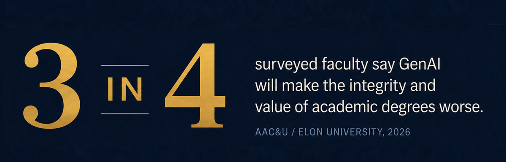
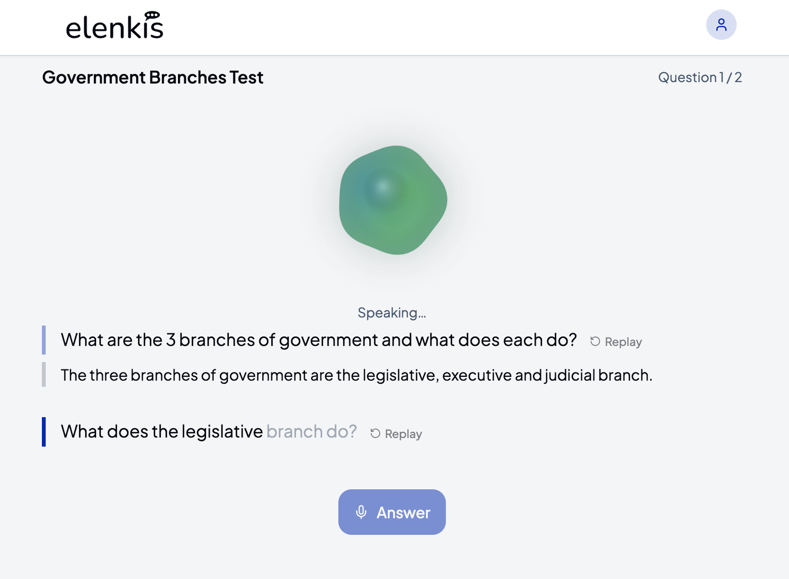
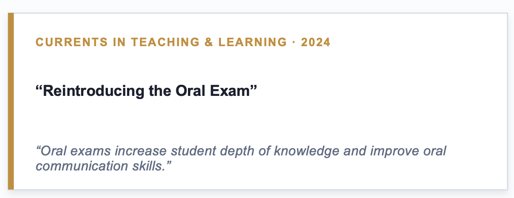
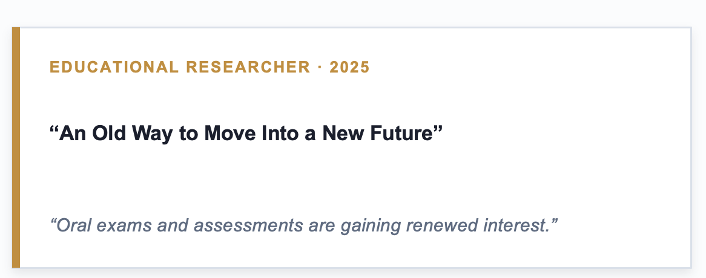
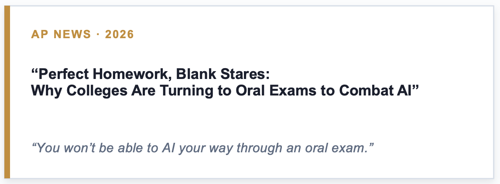
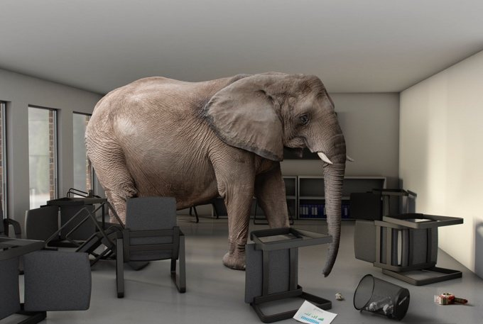
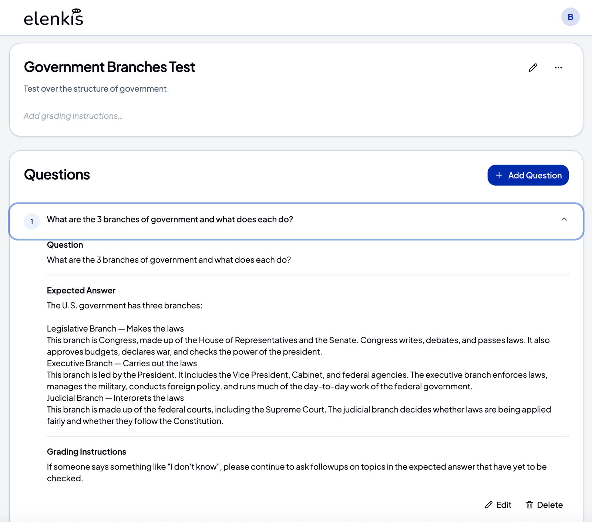
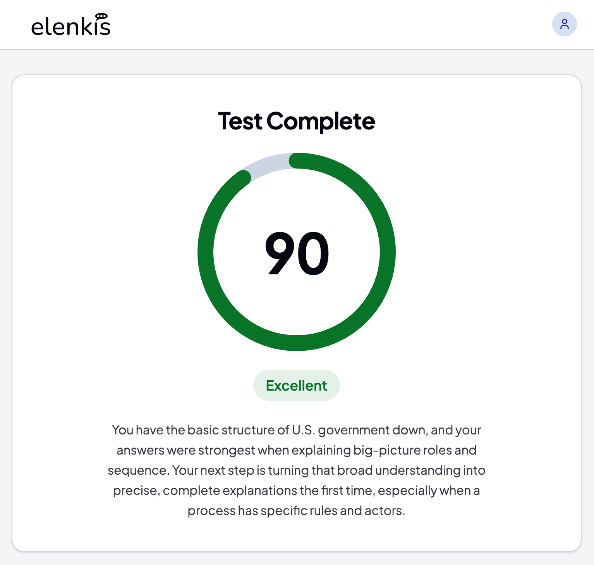
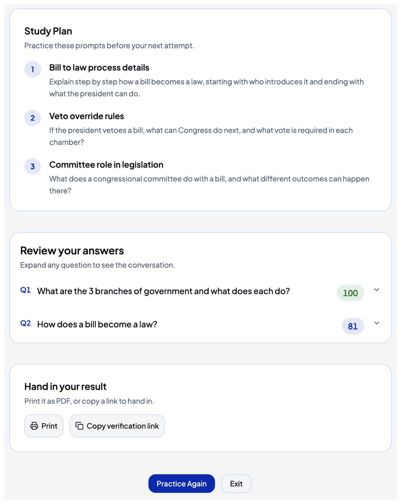

Scalable oral assessment in the age of AI
Extending human knowledge through conversation.
We call it the Socratic Method.
Socrates called it elenkis.
Elenkis helps educators verify authentic understanding by turning oral exams into guided, on-demand conversations students can practice, complete, and learn from.

90
Excellent
Personalized feedback and a study plan for the next attempt.
The problem
AI has created a new assessment crisis.
When polished writing is easy to generate, schools need a better way to know whether students truly understand the material.
College Board
Faculty express near-universal concern that student AI use undermines original writing and critical thinking.
UC Berkeley Law
Strict bans on AI use show how quickly institutions are rethinking assessment rules.
Higher education
The old signals of effort and understanding are under pressure.
The solution
Oral exams make thinking visible.
When students must explain ideas in their own words, educators can assess more than a polished final answer. They can hear how students reason, identify gaps in understanding, and ask the follow-up question that reveals what a student truly knows.
Verify authentic understanding
Students explain concepts and reasoning aloud instead of submitting work that may not reflect their own understanding.
Probe beyond the first answer
Targeted follow-up questions distinguish memorized responses from knowledge students can connect, defend, and apply.
Strengthen learning and communication
Speaking through ideas helps students find gaps, organize arguments, build confidence, and practice communicating clearly.



The challenge
The Elephant in the Room:Scale
Oral exams are powerful precisely because they are personal and responsive. That has also made them too time-intensive for most educators to use consistently.

Why oral exams have not scaled
The obstacle isn’t rigor. It’s time.
15–45minutes per exam
~15hours for a class of 30
Elenkis preserves the rigor of spoken assessment while removing the scheduling bottleneck that keeps oral exams from working at classroom scale.
Enter Elenkis
Voice-based assessment built for real classrooms.
Teachers define the assessment. Students converse with Elenkis. The platform returns a score report, transcript, strengths, improvements, and practice plan.
01
Teachers build the assessment.
Enter questions, expected responses, grading guidance, and follow-up expectations. Elenkis keeps the instructor’s standards at the center.

02
Students have a conversation.
Students listen to each question, respond out loud, and receive follow-up prompts that test whether they can explain their reasoning.
03
Elenkis scores and explains.
After the conversation, students receive a clear result and instructors get a record of what the student actually said and understood.

04
Students know how to improve.
Strengths, improvements, a study plan, answer review, and transcript help students practice again instead of simply seeing a grade.

Why it matters
Elenkis accelerates learning while restoring confidence in assessment.
Verifies authentic understanding
Students explain their reasoning aloud, making it harder to hide behind generated text.
Scales oral assessment
AI runs and scores the conversation, so oral exams become possible beyond one-on-one appointments.
Amplifies learning
Students can practice any time, day or night, with feedback that points to the next attempt.
Early feedback
Students and faculty are already seeing the value.
“Elenkis was very useful to me. It was an opportunity to speak my answers out loud with a knowledgeable, critical audience prior to the exam. Elenkis was 100% on demand. I felt truly challenged to articulate my answers and get feedback on them.”
Student at Southern Methodist University
“I’m having some great interactions with early testing. I gave it some complex answers and it did great continuing to prompt with follow-up questions when I took the assessment. Our Digital Learning Solutions team would love to explore this tool as well.”
Faculty, LA Pacific University
The advisory council
Guided by leaders across education, assessment, and AI.
Bivin Sadler
Founder & CEO
Director, SMU M.S. in Data Science
20+ years in higher education
Jake Rastberger
Co-Founder & CTO
AI systems architect
Principal Engineer, AT&T
Former Senior Data Engineer, Toyota
Christian Talbot
Accreditation Strategy
President, Middle States Association
(MSA-CESS)
Laura Day
K–12 Innovation
Director of Innovation and Collaboration
The Hockaday School
Steve Halfaker
Educational Leadership
Former Superintendent
Education Consultant
Dr. Andrew Shean
Higher Ed / Online Strategy
Provost / Chief Academic Officer
LA Pacific University
Weston Drake
Garrett Klas
Business Strategy
CFO and CEO
Sea Cliff Consulting
Steve Dietz
UE Expert
Founder / CEO
900lbs Creative
Few teams understand both the assessment problem and the AI to solve it.
Let's Talk!
Want to talk through how oral assessment could work in your course or school?
Let’s talk! We can discuss use cases, pilots, privacy needs, and where Elenkis might fit into your learning and assessment strategy.
contact@elenkis.com